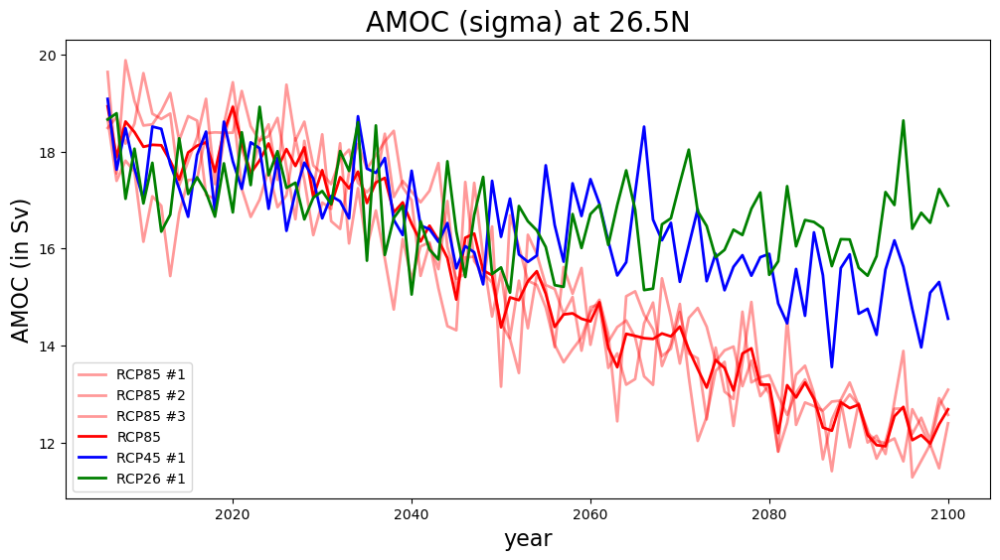

AMOC sigma Plotting Routines#
Goal: Produce timeseries plots for AMOC(sigma)
Date: April 2023
Creator: Teagan King, adapted from Fred Castruccio’s notebook
%load_ext autoreload
%autoreload 2
import xarray as xr
import numpy as np
import cftime
import datetime
import glob
import matplotlib as mpl
import matplotlib.pyplot as plt
import matplotlib.units as munits
from matplotlib.dates import ConciseDateConverter
munits.registry[cftime.DatetimeNoLeap] = ConciseDateConverter()
munits.registry[cftime.datetime] = ConciseDateConverter()
import matplotlib.ticker as mticker
%matplotlib inline
The autoreload extension is already loaded. To reload it, use:
%reload_ext autoreload
mocf = '/glade/scratch/tking/MOCsig/B.E.13.BRCP85C5CN.ne120_t12.sehires38.003.sunway.CN_OFF.pop.h.MOCsig.*.nc'
ds1 = xr.open_mfdataset(mocf,
combine="nested", # combine files in order provided
concat_dim="time", # concatentate files along time dimension
data_vars="minimal", # only concatentate data variables with "time" dimension
coords="minimal", # same as above for coordinate variables
compat="override",
chunks={"time": 1}, # choose simple
)
yamoc_rcp85_1 = ds1.MOC.isel(transport_reg=1).sel(lat_aux_grid=26.5, method="nearest").max('sigma')
mocf = '/glade/campaign/collections/cmip/CMIP6/iHESP/BRCP85/HR/b.e13.BRCP85C5.ne120_t12.cesm-ihesp-hires1.0.30.002/ocn/proc/tseries/month_1/b.e13.BRCP85C5.ne120_t12.cesm-ihesp-hires1.0.30.002.pop.h.MOCsig.*.nc'
ds2 = xr.open_mfdataset(mocf,
combine="nested", # combine files in order provided
concat_dim="time", # concatentate files along time dimension
data_vars="minimal", # only concatentate data variables with "time" dimension
coords="minimal", # same as above for coordinate variables
compat="override",
chunks={"time": 1}, # choose simple
)
xamoc = ds2['time']
yamoc_rcp85_2 = ds2.MOC.isel(transport_reg=1).sel(lat_aux_grid=26.5, method="nearest").max('sigma')
mocf = '/glade/campaign/collections/cmip/CMIP6/iHESP/BRCP85/HR/b.e13.BRCP85C5.ne120_t12.cesm-ihesp-hires1.0.31.003/ocn/proc/tseries/month_1/b.e13.BRCP85C5.ne120_t12.cesm-ihesp-hires1.0.31.003.pop.h.MOCsig.*.nc'
ds3 = xr.open_mfdataset(mocf,
combine="nested", # combine files in order provided
concat_dim="time", # concatentate files along time dimension
data_vars="minimal", # only concatentate data variables with "time" dimension
coords="minimal", # same as above for coordinate variables
compat="override",
chunks={"time": 1}, # choose simple
)
yamoc_rcp85_3 = ds3.MOC.isel(transport_reg=1).sel(lat_aux_grid=26.5, method="nearest").max('sigma')
mocf = '/glade/campaign/collections/cmip/CMIP6/iHESP/BRCP45/HR/b.e13.BRCP45C5.ne120_t12.cesm-ihesp-hires1.0.42.003/ocn/proc/tseries/month_1/b.e13.BRCP45C5.ne120_t12.cesm-ihesp-hires1.0.42.003.pop.h.MOCsig.*.nc'
ds4 = xr.open_mfdataset(mocf,
combine="nested", # combine files in order provided
concat_dim="time", # concatentate files along time dimension
data_vars="minimal", # only concatentate data variables with "time" dimension
coords="minimal", # same as above for coordinate variables
compat="override",
chunks={"time": 1}, # choose simple
)
yamoc_rcp45_1 = ds4.MOC.isel(transport_reg=1).sel(lat_aux_grid=26.5, method="nearest").max('sigma')
mocf = '/glade/campaign/collections/cmip/CMIP6/iHESP/BRCP26/HR/b.e13.BRCP26C5.ne120_t12.cesm-ihesp-hires1.0.42.003/ocn/proc/tseries/month_1/b.e13.BRCP26C5.ne120_t12.cesm-ihesp-hires1.0.42.003.pop.h.MOCsig.*.nc'
ds5 = xr.open_mfdataset(mocf,
combine="nested", # combine files in order provided
concat_dim="time", # concatentate files along time dimension
data_vars="minimal", # only concatentate data variables with "time" dimension
coords="minimal", # same as above for coordinate variables
compat="override",
chunks={"time": 1}, # choose simple
)
yamoc_rcp26_1 = ds5.MOC.isel(transport_reg=1).sel(lat_aux_grid=26.5, method="nearest").max('sigma')
# perform average of RCP 8.5 scenarios
yamoc_rcp85 = (yamoc_rcp85_1 + yamoc_rcp85_2 + yamoc_rcp85_3) / 3.
# generate plot
plt.figure(figsize=(12,6))
plt.plot(xamoc, yamoc_rcp85_1[:-1], label='RCP85 #1', color='red', alpha=0.4, lw=2)
plt.plot(xamoc, yamoc_rcp85_2, label='RCP85 #2', color='red', alpha=0.4, lw=2)
plt.plot(xamoc, yamoc_rcp85_3, label='RCP85 #3', color='red', alpha=0.4, lw=2)
plt.plot(xamoc, yamoc_rcp85, label='RCP85', color='red', lw=2)
plt.plot(xamoc, yamoc_rcp45_1, label='RCP45 #1', color='blue', lw=2)
plt.plot(xamoc, yamoc_rcp26_1, label='RCP26 #1', color='green', lw=2)
plt.legend()
plt.title('AMOC (sigma) at 26.5N', fontsize=20)
plt.xlabel('year', fontsize=16)
plt.ylabel('AMOC (in Sv)', fontsize=16)
plt.savefig('AMOCsig_26_5_ts_RCPs.png', dpi=300, facecolor='w', edgecolor='w', orientation='portrait')
